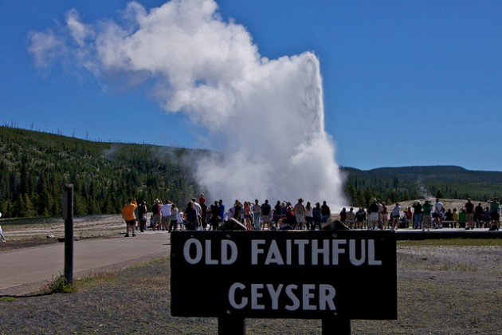
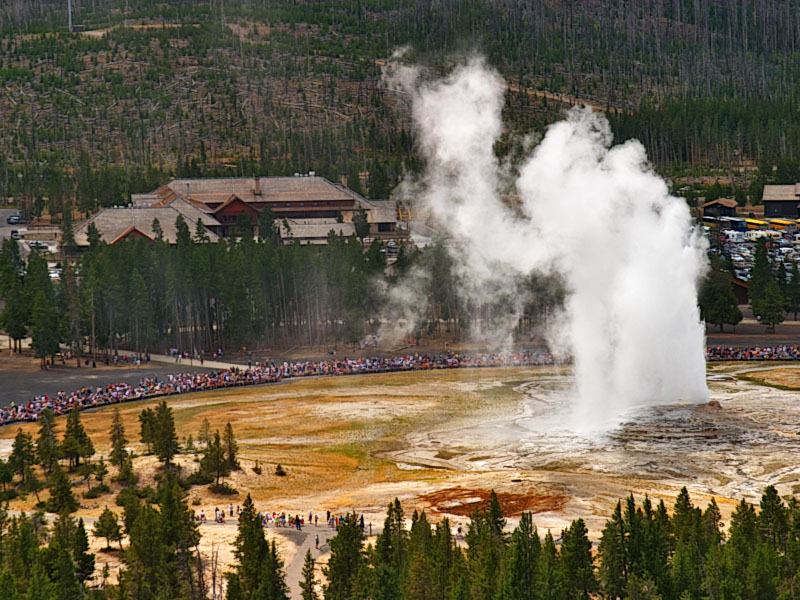
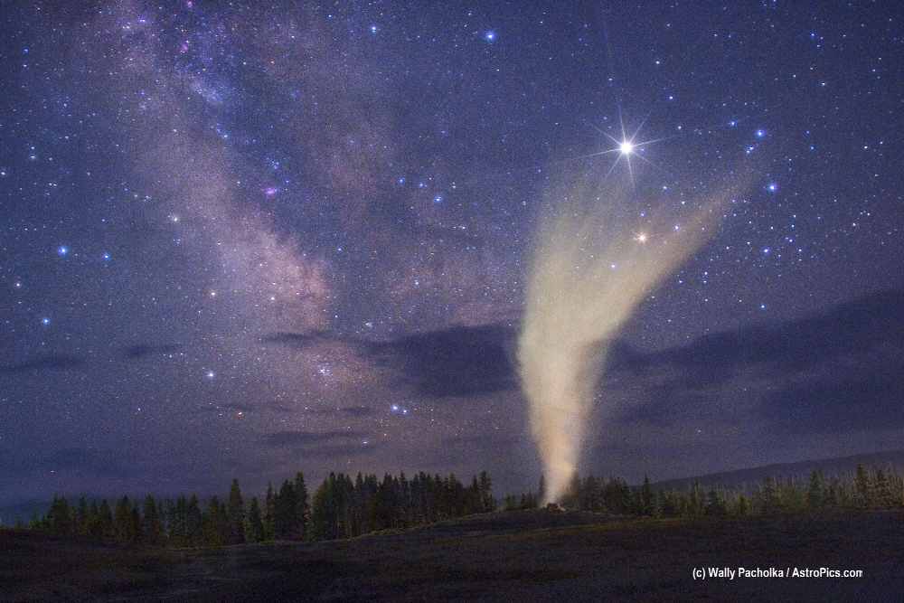

Old Faithful was named by the first official expeditionwhich was called the washburn expedition. They were very impressed by the size and frequency. Old Faithful erupts every 35-120 minutes for a period of 1-5 minutes. The maximum height ranges from 90 to 184 feet. It is one of the many cone geysers at Yellwstone and even though it is not the biggest or regular geyser at yellowstone, it is the most popular. It has been erupting for many years in the same pattern. It is one of the most studied geyser throughout history. The park can now predict the eruptions on a daily basis. It is one of the easiest geysers in Yellowstone to see because of the timing.
Interesting Facts About Old Faithful
- It erupts every 91 minutes

- Old Faithful is the most visited site at Yellowstone
- The height of Old Faithful is 145 to 185 feet

- General Sheridan used the water from Old Faithful to do their laundry in 1882
- The temperature of the water is 244 degrees F
- The geyser sits on the elevation of 2,240 meter or 7,349 feet
